|
VVV - AGOVV (2-4) 14 mei 2004 |
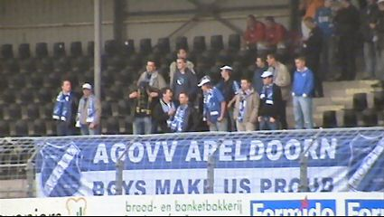
Toch nog 25 supporters uit Apeldoorn in De Koel bij de laatste
wedstrijd van dit seizoen.
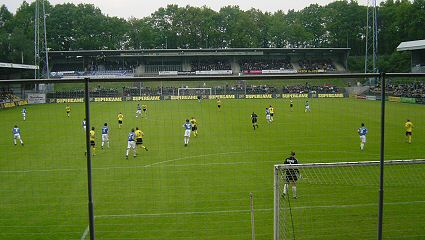
VVV heeft al een periodetitel. Vanavond zal bekend worden in
welke poule de Venlonaren spelen.
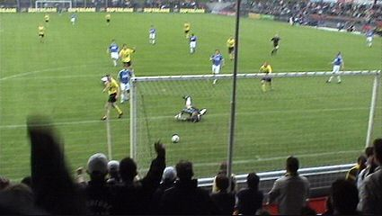
Schitterend doelpunt van Jans in de 22e min.: 1-0 !!!
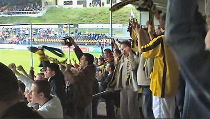
Vreugde in O2-O3, de zeer jeugdige sfeervakken bij VVV.
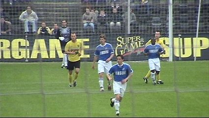
Huntelaar, de PSV-huurling die nadrukkelijk in de belangstelling
staat bij
Roda, is voortdurend te vinden in de punt van de aanval.
Type Bergkamp, geen meter te veel, maar steeds aanspeelbaar
op de
plek waar het gebeuren moet.
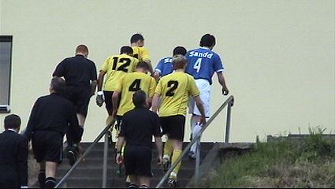
In de 40e min. scoort hij dan ook de gelijkmaker. In Venlo moeten
de
spelers nogal wat treden beklimmen om bij de thee te geraken.
Ook de
supporters moeten flink klimmen om de biertap te bereiken.
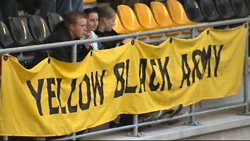
Deze tekst klinkt op de een of andere manier vertrouwd ;-)
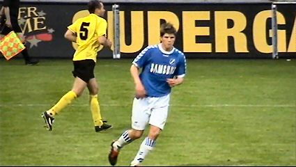
Klaas Jan Huntelaar, topscorer eerste divisie.
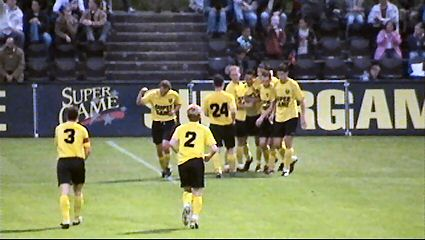
Van Galen scoort 2-1 (63').
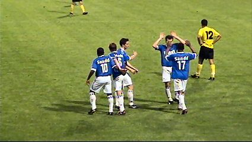
Juliana trekt de stand weer gelijk: 2-2 (69').
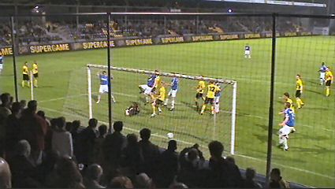
De ongedekte Kalezic scoort 2-3 via een strak genomen vrije
trap, (78').
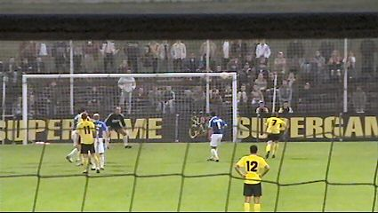
VVV gaat verbeten op zoek naar de gelijkmaker en komt daar
erg dichtbij.
Een van de vele schoten belandt op de lat.
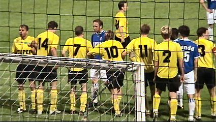
In de 88e min. slaat het onheil toe.....
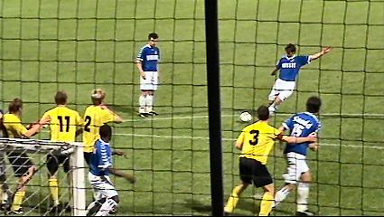
Huntelaar neemt een vrijetrap......
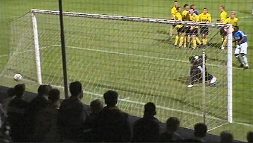
2-4 !!
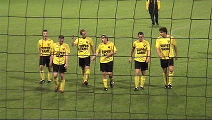
Een aantrekkelijke wedstrijd met van beide kanten aanvallend
voetbal
eindigt teleurstellend voor het thuispubliek dat echter
tot het eind achter
de ploeg blijft staan.
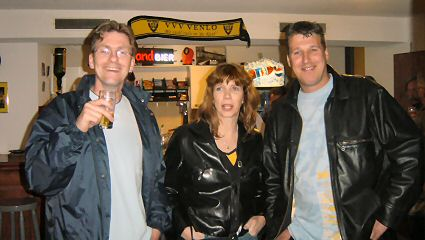
Old school VVV-hools, tegenwoordig in rustig vaarwater ;-)
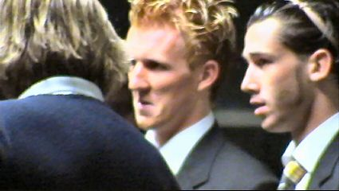
Ken Leemans en Kevin Begois worden geïnterviewd.
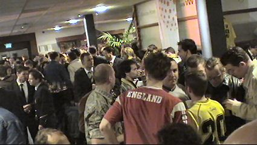
Sfeer tijdens het supportersfeest.
De bedeesde oud-Rodaspeler Bas Jacobs is uitgegroeid tot een
vaste
waarde in Venlo. Hij is gelukkig nog even vriendelijk en
bovendien blij
verrast om enkele Rodafans te ontmoeten.
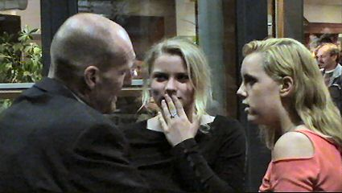
Eveneens ex-Roda en binnenkort ook ex-VVV: Wim Dusseldorp.
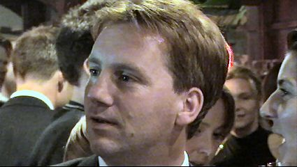
En ook deze jongeman heeft een Roda-verleden: Maurice Graeff.
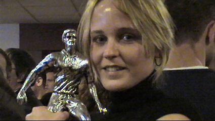
Venloosch mooiste met de "speler-van-het-seizoen" trofee.
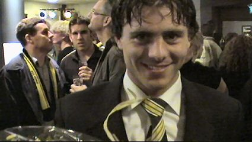
En dit is dan de speler van het seizoen: Meeuwis.
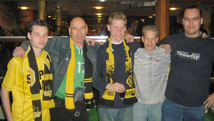
Broekhin rules.....!
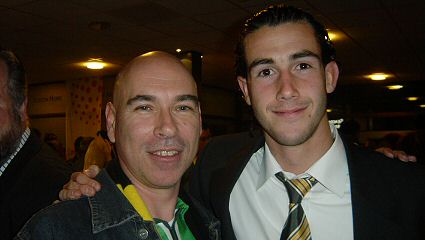
Toekomstige (?) keeper Begois informeerde naar The originals
waar hij
goede herinneringen aan bewaart uit zijn KV Mechelen-periode. Kevin
heeft nog steeds zeer warme sympathie voor zijn
oude club en wist zelfs
van Patje en Melleke te vertellen....
Gedurende de avond druppelen de uitslagen binnen. Den Bosch
is
kampioen geworden en VVV speelt nacompetitie tegen
Helmond Sport,
Sparta en de nummer 16 uit de eredivisie. De
meeste VVV-fans zien
promotie niet zitten maar zijn uiterst
gebrand op een zege tegen Vitesse,
mocht dit de nummer
16 worden.
Hoewel VVV alleraardigst aanvallend voetbal speelt met zeer
veel inzet,
lijkt het verschil met de clubs uit de eredivisie iets te
groot. Maar in de
nacompetitie gelden andere wetten.
FORZA VVV !!!
©
Koempels
Pleasure Dome